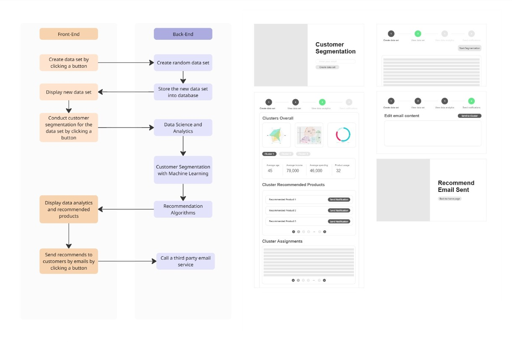
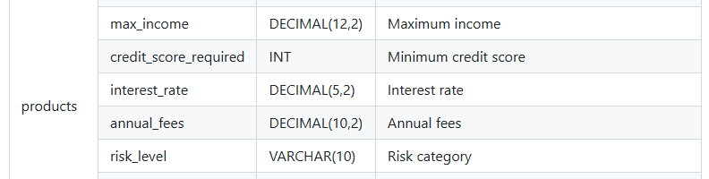
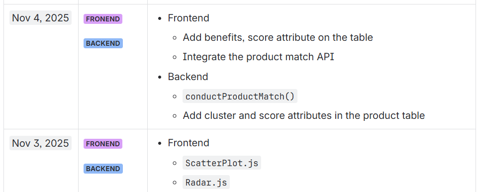

With four years of experience as a Product Manager across the concept, growth, and mature stages of the product lifecycle, I have developed a strong understanding of how data influences business direction, product strategy, and marketing performance. After my MSc in Computer Science, I wanted to deepen this perspective by moving beyond decision-making into building data systems myself. This project was inspired by a recurring challenge I observed: teams often lack clear and actionable customer segmentation, leading to slow decisions, subjective discussions, and inefficient marketing efforts driven by trial and error.
This project is an end-to-end customer segmentation platform designed to demonstrate how teams can use data to better understand users and deliver targeted experiences. By segmenting users and matching them with relevant products, the system enables more precise and efficient marketing simulations. The intention was not just to build a technical demo, but to create a scalable product concept that can be adapted across industries and support data-driven decision-making.
I approached the project as a full product lifecycle, starting with workflow design to map interactions between backend and frontend systems. This helped define the scope and prioritise key requirements early on. Wireframing the interface allowed me to focus on how users consume and interpret data, especially what information is most valuable for decision-making.
A key challenge was ensuring that machine learning outputs are understandable and trustworthy for non-technical users. Rather than focusing on explaining the algorithm itself, I designed features that emphasise transparency. For example, cluster overviews explain why users are grouped together across multiple dimensions, while validation tools allow users to inspect how individual data points are assigned. This reflects a core product principle: data is only valuable if users trust it.

To strengthen my technical foundation after my MSc, I built the system end-to-end from scratch. The backend is developed in Python using Flask with RESTful APIs to handle data processing and communication. The frontend is built with React, using a component-based architecture to ensure reusability and scalability. PostgreSQL is used as the relational database to manage structured data efficiently. The overall system is designed to be lightweight while maintaining flexibility for future feature expansion.
To simulate real-world scenarios, I designed both user and product datasets based on financial industry structures. Instead of using existing datasets, I generated synthetic data to have full control over attributes and system behaviour. Data is reset after each run to ensure consistent performance and avoid degradation in future demonstrations. These decisions reflect a balance between realism, performance, and maintainability.

The core of the system is a segmentation engine powered by K-Means clustering, exposed through APIs. Users are grouped based on multiple attributes, and these segmentation results are then used by a product matching engine to calculate relevance scores between users and products. This demonstrates how data can directly inform product recommendations and marketing strategies in a practical and scalable way.
The project also includes a demonstration of how marketing teams can activate segmentation results. It simulates targeted outreach based on user groups, providing a foundation for more advanced features such as email customisation, messaging channels, or integration with CRM platforms. While simplified, this component highlights how data insights can be translated into real business actions.
Throughout the project, I maintained detailed documentation and daily work logs using Confluence, and published key materials on GitHub. This approach ensured traceability, clarity in development progress, and ease of knowledge transfer. I treated the project with production-level discipline, reflecting my working style as a product manager.

The system is deployed on a remote server with clear separation between development and production environments. This allows for local testing during development while maintaining a stable deployed version. Due to the use of a cost-efficient hosting solution, the application may experience slower initial load times, which reflects real-world trade-offs between performance and infrastructure cost. The system is designed with scalability in mind, although infrastructure expansion is not currently prioritised.
This project represents my ability to take full ownership of a product, from problem definition and design to development and deployment. By combining my product management experience with the technical skills developed during my MSc in Computer Science, I was able to build a complete data product from the ground up. It also reinforced my belief that data is not just a supporting function, but a core product capability. When designed effectively, data systems can reduce uncertainty, improve decision-making, and drive meaningful product growth across industries.